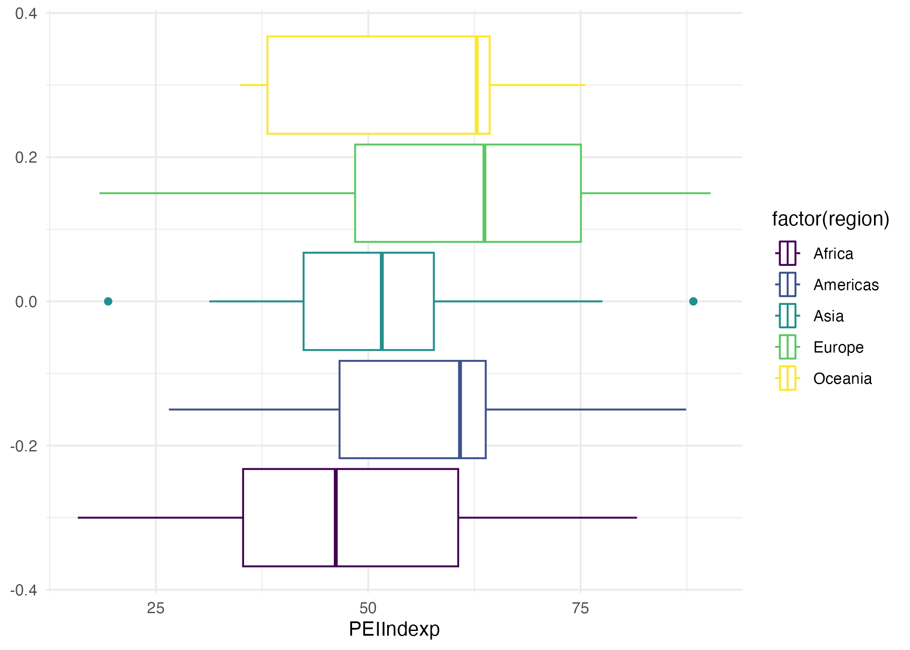
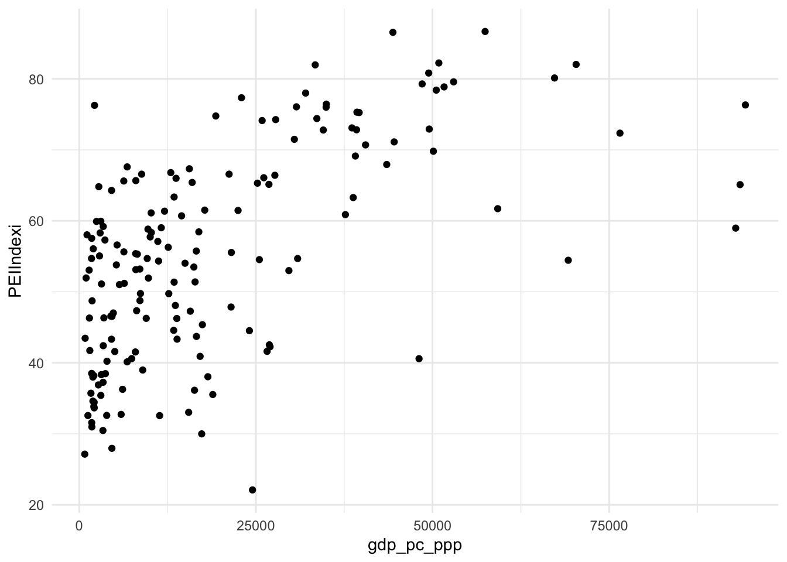

pei <- haven::read_dta("data/PEI country-level data (PEI_9.0).dta")Lab 3: Describing Relationships
Last Week
- Introduction to
ggplot2package for data visualization - Grammar of graphics
- Descriptive statistics
Leftovers from Last Time
Grammar of Graphics
Recall that we have multiple layers in the plots:
- data: the dataset containing the variables of interest.
- aes: aesthetic attributes of the geometric object. The most important are the names of the variables that should be on the x- and y-axes. Aesthetic attributes are mapped to variables in the dataset.
- geom: the geometric object to display, e.g., scatterplot, line, bar.
ggplot(data = [dataset],
mapping = aes(
x = [x - variable],
y = [y - variable]
)
) +
geom_xxx() +
other optionsDistributions of Continuous Variables
Boxplot, Violin Plot, and Observations Layers Combined
ggplot(data = pei,
mapping = aes(x = PEIIndexp, y = 1)) +
geom_violin(alpha = 0.5) +
geom_boxplot(alpha = 0.5, width = 0.5) +
geom_jitter() # adds points with a little random noise (i.e. tiny shifts on both x and y coordinates)Warning: Removed 21 rows containing non-finite values (`stat_ydensity()`).Warning: Removed 21 rows containing non-finite values (`stat_boxplot()`).Warning: Removed 21 rows containing missing values (`geom_point()`).Distributions of Discrete and Categorial Variables
Barplot
geom_bar() visualizes the distribution of a categorical or discrete variable. This is a simpler task than creating a histogram, as we are simply counting different categories within a categorical variable, also known as the levels of the categorical variable. Often the best way to visualize these different counts, also known as frequencies, is with a barplot.
Let’s recode the variable region to be more readable and visualize the counts:
pei <- pei %>%
mutate(
region = case_when(
region == 1 ~ "Africa",
region == 2 ~ "Americas",
region == 3 ~ "Asia",
region == 4 ~ "Europe",
region == 5 ~ "Oceania"
)
)
count(pei, region)# A tibble: 5 × 2
region n
<chr> <int>
1 Africa 48
2 Americas 30
3 Asia 32
4 Europe 49
5 Oceania 10In bar plots of categorical variables with non-ordered levels, it’s often preferable to reorder the bars based on their frequencies. Doing so requires transforming the variable to a factor (how R handles categorical data) and then reordering the levels of that factor. Below you can find both versions of bar plots:
ggplot(data = pei,
mapping = aes(x = region)) +
geom_bar()
ggplot(data = pei,
mapping = aes(x = forcats::fct_infreq(region))) +
geom_bar() Category Ordering
We can also choose to show the bars horizontally rather than vertically by setting a different axis for region:
ggplot(data = pei,
mapping = aes(y = region %>% fct_infreq())) +
geom_bar()
ggplot(data = pei,
mapping = aes(y = region %>%
fct_infreq() %>% # order in frequency
fct_rev() # reverse the order
)) +
geom_bar() Proportions vs. Counts
There is also a way to show proportions, rather than counts, on the vertical axis… (we can always explicitly calculate these quantities and plot them of course). By default, ggplot creates one group per each bar, so all the proportions are set to 1 (on the left).
ggplot(data = pei,
mapping = aes(x = region,
y = ..prop..)) +
geom_bar() +
scale_y_continuous(labels = scales::percent_format())Warning: The dot-dot notation (`..prop..`) was deprecated in ggplot2 3.4.0.
ℹ Please use `after_stat(prop)` instead.ggplot(data = pei,
mapping = aes(x = region,
y = ..prop..,
group = 1)) +
geom_bar() +
scale_y_continuous(labels = scales::percent_format())Important Nuances
Order of Layers Matters
ggplot(data = pei,
mapping = aes(x = PEIIndexp, y = 1)) +
geom_boxplot() +
geom_violin()Warning: Removed 21 rows containing non-finite values (`stat_boxplot()`).Warning: Removed 21 rows containing non-finite values (`stat_ydensity()`).ggplot(data = pei,
mapping = aes(x = PEIIndexp, y = 1)) +
geom_violin() +
geom_boxplot() Warning: Removed 21 rows containing non-finite values (`stat_ydensity()`).Warning: Removed 21 rows containing non-finite values (`stat_boxplot()`).Global vs. Local Mapping
The plots below illustrate the differences between setting mappings globally, i.e. in ggplot(aes(...)) layer and locally, i.e. in geom_ layers.
ggplot(data = pei,
mapping = aes(x = PEIIndexp, y = 1)) +
geom_boxplot() +
geom_violin()Warning: Removed 21 rows containing non-finite values (`stat_boxplot()`).Warning: Removed 21 rows containing non-finite values (`stat_ydensity()`).ggplot(data = pei, aes(x = PEIIndexp)) +
geom_boxplot() +
geom_violin(aes(y = 1))Warning: Removed 21 rows containing non-finite values (`stat_boxplot()`).
Removed 21 rows containing non-finite values (`stat_ydensity()`).ggplot(data = pei) +
geom_boxplot(aes(x = PEIIndexp)) +
geom_violin(aes(x = PEIIndexp, y = 1))Warning: Removed 21 rows containing non-finite values (`stat_boxplot()`).
Removed 21 rows containing non-finite values (`stat_ydensity()`).

While it is often more efficient to set the aesthetics globally, sometimes you may want to show related but different quantities on the plot, so setting aesthetics locally becomes necessary.
Setting vs. Mapping
So far, we have primarily been using color with no substantive purpose: we were setting it to a particular value. Yet we can use color in mappings, too. - We map variables to aesthetics (e.g. color/fill or shape) if we want the visual attribute represented by that aesthetic to vary based on the values of that variable. This goes inside aes(). - Otherwise, we set the value of an aesthetic. The choice of this value is on us. This goes into geom_.
ggplot(data = pei,
mapping = aes(x = PEIIndexp)) +
geom_boxplot(aes(color = factor(region))) +
scale_color_viridis_d()Warning: Removed 21 rows containing non-finite values (`stat_boxplot()`).# setting can overwrite the mapping
ggplot(data = pei,
mapping = aes(x = PEIIndexp)) +
geom_boxplot(aes(color = factor(region)), color = "red") Warning: Removed 21 rows containing non-finite values (`stat_boxplot()`).# mixing up setting and mapping
ggplot(data = pei,
mapping = aes(x = PEIIndexp)) +
geom_boxplot(aes(color = "red"))Warning: Removed 21 rows containing non-finite values (`stat_boxplot()`).Saving Plot Objects
Plots are R objects, just like vectors or data frames. We can create them, print them and save them. Up until now, we have just made them in an R code chunk. That is what most often you will be doing when working with Quarto. Sometimes, however, it is handy to work with a plot object.
my_plot <- ggplot(data = pei,
mapping = aes(x = PEIIndexp)) +
geom_boxplot(aes(color = factor(region))) +
scale_color_viridis_d()This code above does not print anything out. In order to make this plot appear, we need to print it out explicitly. Recall that typing the name of an object is the same thing as using print(). Now that we have this object, we can display it whenever we want.
my_plotWarning: Removed 21 rows containing non-finite values (`stat_boxplot()`).
But, sometimes, we want a permanent copy of the plot outside of R, saved to our computer. That is the purpose of ggsave():
ggsave(
filename = "figures/pei_plot.png",
plot = my_plot
)Saving 7 x 5 in imageWarning: Removed 21 rows containing non-finite values (`stat_boxplot()`).We can then include it into qmd files as an external image like this:
knitr::include_graphics(path = "figures/pei_plot.png")
Plotting Two or More Variables
Two Variables: Continuous
Scatterplots, also called bivariate plots, allow you to visualize the relationship between two numerical variables. The most appropriate geom for that is usually geom_point():
ggplot(data = pei,
mapping = aes(y = PEIIndexi,
x = gdp_pc_ppp)) +
geom_point() # plots the observationsWarning: Removed 2 rows containing missing values (`geom_point()`).
Let’s break down this code, piece-by-piece.
- The data argument is set to trains via
data = pei. - The aesthetic mapping is set via
mapping = aes(x = PEIIndexi, y = gdp_pc_ppp). Here, we mapPEIIndexito the x axis andgdp_pc_pppto theyaxis. - The geometric object is specified using
geom_point(), tellingRwe want a scatterplot. We added a layer using the+sign.
geom_point works fine on its own if we don’t have too many observations and when there are many distinct values in the variables we plot.
geom_smooth
ggplot(data = pei,
mapping = aes(y = PEIIndexi,
x = gdp_pc_ppp)) +
geom_point() + # plots the observations
geom_smooth(method = 'loess', formula = 'y ~ x', se = FALSE)Warning: Removed 2 rows containing non-finite values (`stat_smooth()`).Warning: Removed 2 rows containing missing values (`geom_point()`).ggplot(data = pei,
mapping = aes(y = PEIIndexi,
x = gdp_pc_ppp)) +
geom_point() + # plots the observations
geom_smooth(method = 'lm', formula = 'y ~ x', se = FALSE)Warning: Removed 2 rows containing non-finite values (`stat_smooth()`).
Removed 2 rows containing missing values (`geom_point()`).
When needed, transformations to variables can applied directly in the mapping (these changes will not be saved in the dataset).
ggplot(data = pei,
mapping = aes(y = PEIIndexi,
x = log(gdp_pc_ppp))) +
geom_point() + # plots the observations
geom_smooth(method = 'lm', formula = 'y ~ x', se = FALSE)Warning: Removed 2 rows containing non-finite values (`stat_smooth()`).Warning: Removed 2 rows containing missing values (`geom_point()`).Three Variables: Two Continuous + Categorical
ggplot(
data = pei,
mapping = aes(
y = PEIIndexi,
x = gdp_pc_ppp,
color = region # add color by region
)
) +
geom_point() +
scale_x_continuous(labels = scales::dollar_format()) Warning: Removed 2 rows containing missing values (`geom_point()`).ggplot(
data = pei,
mapping = aes(
y = PEIIndexi,
x = gdp_pc_ppp,
color = region # add color by region
)
) +
geom_point() +
scale_x_continuous(labels = scales::dollar_format()) +
scale_color_viridis_d() # make colors colorblind-friendlyWarning: Removed 2 rows containing missing values (`geom_point()`).Two Variables: Continous and Categorical
Let’s consider a few options for plotting such combinations of variables:
ggplot(data = pei,
mapping = aes(y = PEIIndexi,
x = region)) +
geom_point()
ggplot(data = pei,
mapping = aes(y = PEIIndexi,
x = region)) +
geom_jitter(width = 0.1)
ggplot(data = pei,
mapping = aes(y = PEIIndexi,
x = region)) +
geom_boxplot()
ggplot(data = pei,
mapping = aes(x = PEIIndexi,
group = region)) +
geom_density()
ggplot(data = pei,
mapping = aes(x = PEIIndexi,
color = region,
fill = region)) +
geom_density(alpha = 0.3)
ggplot(data = pei,
mapping = aes(x = PEIIndexi)) +
geom_density(alpha = 0.3) +
facet_wrap(vars(region))Two Categorical Variables
ggplot(
data = pei,
mapping = aes(
y = oecd,
x = region
)
) +
geom_jitter(width = 0.1)ggplot(
data = pei,
mapping = aes(
y = factor(oecd),
x = region
)
) +
geom_jitter(width = 0.1)
ggplot(
data = pei,
mapping = aes(
y = factor(oecd),
x = region
)
) +
geom_count()
ggplot(pei, aes(
x = region,
fill = factor(oecd)
)) +
geom_bar()
ggplot(pei, aes(
x = region,
fill = factor(oecd)
)) +
geom_bar(position = "dodge")Basic Data Wrangling Functions
We can’t use all the beautiful plots until we have “wrangled” the data into a convenient shape and have all the variables we need for plotting. You have seen some of these functions already, but let’s now look at them a bit more systematically. Key wrangling functions include:
filter(): to pick out the rows we want to keep from a tibble.select(): to pick out the columns we want to keep from a tibble.arrange(): to sort the rows in a tibble, in either ascending or descending order.mutate(): to create new columns.summarize(): to create a new tibble comprised of summary statistics for one (or more) rows, depending on the use of the.byargument.
The pipe operator: %>% (again)
The pipe operator (%>%) allows us to combine multiple operations in R into a single sequential chain of actions. Much like how the + sign has to come at the end of the line when constructing plots — because we are building the plot layer-by-layer — the pipe operator %>% has to come at the end of the line because we are building a data wrangling pipeline step-by-step. If you do not include the pipe operator, R assumes the next line of code is unrelated to the layers you built and you will get an error.
filter rows
The filter() function works much like the “Filter” option in Microsoft Excel. It allows you to specify criteria about the values of a variable in your dataset and then selects only the rows that match that criteria.
# only Europe (show, not store in the environment)
pei %>%
filter(region == "Europe")# A tibble: 49 × 169
country ISO y2012 y2013 y2014 y2015 y2016 y2017 y2018 y2019
<chr> <chr> <dbl+l> <dbl+l> <dbl+l> <dbl+l> <dbl+l> <dbl+l> <dbl+l> <dbl+l>
1 Albania ALB 0 [Res… 1 [201… 0 [Res… 0 [Res… 0 [Res… 1 [201… 0 [Res… 0 [Res…
2 Armenia ARM 0 [Res… 1 [201… 0 [Res… 0 [Res… 0 [Res… 1 [201… 1 [201… 0 [Res…
3 Austria AUT 0 [Res… 1 [201… 0 [Res… 0 [Res… 1 [201… 1 [201… 0 [Res… 1 [201…
4 Azerba… AZE 0 [Res… 1 [201… 0 [Res… 1 [201… 0 [Res… 0 [Res… 1 [201… 0 [Res…
5 Belgium BEL 0 [Res… 0 [Res… 1 [201… 0 [Res… 0 [Res… 0 [Res… 0 [Res… 1 [201…
6 Bulgar… BGR 0 [Res… 1 [201… 1 [201… 0 [Res… 1 [201… 1 [201… 0 [Res… 0 [Res…
7 Bosnia BIH 0 [Res… 0 [Res… 1 [201… 0 [Res… 0 [Res… 0 [Res… 1 [201… 0 [Res…
8 Belarus BLR 1 [201… 0 [Res… 0 [Res… 1 [201… 1 [201… 0 [Res… 0 [Res… 1 [201…
9 Switze… CHE 0 [Res… 0 [Res… 0 [Res… 1 [201… 0 [Res… 0 [Res… 0 [Res… 1 [201…
10 Cyprus CYP 0 [Res… 1 [201… 0 [Res… 0 [Res… 1 [201… 0 [Res… 1 [201… 0 [Res…
# ℹ 39 more rows
# ℹ 159 more variables: y2020 <dbl+lbl>, y2021 <dbl+lbl>, y2022 <dbl+lbl>,
# COUNTRYDATA <dbl>, PR <dbl>, CL <dbl>, development <dbl>, gdp_pc_ppp <dbl>,
# region <chr>, region9 <dbl+lbl>, oecd <dbl>, OVERALLINTEGRITY <dbl>,
# PEIIndexp <dbl>, PEIIndexi <dbl>, rating <dbl>, LAWS <dbl>,
# lawsunfair <dbl>, lawsunfair2 <dbl>, favoredincumbent <dbl>,
# favoredincumbent2 <dbl>, citizens <dbl>, citizens2 <dbl>, laws <dbl>, …Here are a few more operators that we can use here:
>for “greater than”<for “less than”>=for “greater than or equal to”<=for “less than or equal to”!=for “not equal to”%in%for “inside”
# everything but Europe (show, not store in the environment)
pei %>%
filter(region != "Europe")# A tibble: 120 × 169
country ISO y2012 y2013 y2014 y2015 y2016 y2017 y2018 y2019
<chr> <chr> <dbl+l> <dbl+l> <dbl+l> <dbl+l> <dbl+l> <dbl+l> <dbl+l> <dbl+l>
1 Afghan… AFG 0 [Res… 0 [Res… 1 [201… 0 [Res… 0 [Res… 0 [Res… 1 [201… 1 [201…
2 Angola AGO 1 [201… 0 [Res… 0 [Res… 0 [Res… 0 [Res… 1 [201… 0 [Res… 0 [Res…
3 Argent… ARG 0 [Res… 1 [201… 0 [Res… 1 [201… 0 [Res… 1 [201… 0 [Res… 1 [201…
4 Antigu… ATG 0 [Res… 0 [Res… 0 [Res… 0 [Res… 0 [Res… 0 [Res… 1 [201… 0 [Res…
5 Austra… AUS 0 [Res… 1 [201… 0 [Res… 0 [Res… 1 [201… 0 [Res… 0 [Res… 1 [201…
6 Burundi BDI 0 [Res… 0 [Res… 0 [Res… 1 [201… 0 [Res… 0 [Res… 0 [Res… 0 [Res…
7 Benin BEN 0 [Res… 0 [Res… 0 [Res… 1 [201… 1 [201… 0 [Res… 0 [Res… 1 [201…
8 Burkin… BFA 1 [201… 0 [Res… 0 [Res… 1 [201… 0 [Res… 0 [Res… 0 [Res… 0 [Res…
9 Bangla… BGD 0 [Res… 0 [Res… 1 [201… 0 [Res… 0 [Res… 0 [Res… 0 [Res… 0 [Res…
10 Bahrain BHR 0 [Res… 0 [Res… 1 [201… 0 [Res… 0 [Res… 0 [Res… 1 [201… 0 [Res…
# ℹ 110 more rows
# ℹ 159 more variables: y2020 <dbl+lbl>, y2021 <dbl+lbl>, y2022 <dbl+lbl>,
# COUNTRYDATA <dbl>, PR <dbl>, CL <dbl>, development <dbl>, gdp_pc_ppp <dbl>,
# region <chr>, region9 <dbl+lbl>, oecd <dbl>, OVERALLINTEGRITY <dbl>,
# PEIIndexp <dbl>, PEIIndexi <dbl>, rating <dbl>, LAWS <dbl>,
# lawsunfair <dbl>, lawsunfair2 <dbl>, favoredincumbent <dbl>,
# favoredincumbent2 <dbl>, citizens <dbl>, citizens2 <dbl>, laws <dbl>, …# every row where PEI index is ABOVE 50
pei %>%
filter(PEIIndexi > 55)# A tibble: 84 × 169
country ISO y2012 y2013 y2014 y2015 y2016 y2017 y2018 y2019
<chr> <chr> <dbl+l> <dbl+l> <dbl+l> <dbl+l> <dbl+l> <dbl+l> <dbl+l> <dbl+l>
1 Argent… ARG 0 [Res… 1 [201… 0 [Res… 1 [201… 0 [Res… 1 [201… 0 [Res… 1 [201…
2 Armenia ARM 0 [Res… 1 [201… 0 [Res… 0 [Res… 0 [Res… 1 [201… 1 [201… 0 [Res…
3 Austra… AUS 0 [Res… 1 [201… 0 [Res… 0 [Res… 1 [201… 0 [Res… 0 [Res… 1 [201…
4 Austria AUT 0 [Res… 1 [201… 0 [Res… 0 [Res… 1 [201… 1 [201… 0 [Res… 1 [201…
5 Belgium BEL 0 [Res… 0 [Res… 1 [201… 0 [Res… 0 [Res… 0 [Res… 0 [Res… 1 [201…
6 Benin BEN 0 [Res… 0 [Res… 0 [Res… 1 [201… 1 [201… 0 [Res… 0 [Res… 1 [201…
7 Bulgar… BGR 0 [Res… 1 [201… 1 [201… 0 [Res… 1 [201… 1 [201… 0 [Res… 0 [Res…
8 Brazil BRA 0 [Res… 0 [Res… 1 [201… 0 [Res… 0 [Res… 0 [Res… 1 [201… 0 [Res…
9 Barbad… BRB 0 [Res… 1 [201… 0 [Res… 0 [Res… 0 [Res… 0 [Res… 1 [201… 0 [Res…
10 Bhutan BTN 0 [Res… 1 [201… 0 [Res… 0 [Res… 0 [Res… 0 [Res… 1 [201… 0 [Res…
# ℹ 74 more rows
# ℹ 159 more variables: y2020 <dbl+lbl>, y2021 <dbl+lbl>, y2022 <dbl+lbl>,
# COUNTRYDATA <dbl>, PR <dbl>, CL <dbl>, development <dbl>, gdp_pc_ppp <dbl>,
# region <chr>, region9 <dbl+lbl>, oecd <dbl>, OVERALLINTEGRITY <dbl>,
# PEIIndexp <dbl>, PEIIndexi <dbl>, rating <dbl>, LAWS <dbl>,
# lawsunfair <dbl>, lawsunfair2 <dbl>, favoredincumbent <dbl>,
# favoredincumbent2 <dbl>, citizens <dbl>, citizens2 <dbl>, laws <dbl>, …# every row where PEI type is ABOVE 3
pei %>%
filter(PEItype > 3)# A tibble: 61 × 169
country ISO y2012 y2013 y2014 y2015 y2016 y2017 y2018 y2019
<chr> <chr> <dbl+l> <dbl+l> <dbl+l> <dbl+l> <dbl+l> <dbl+l> <dbl+l> <dbl+l>
1 Argent… ARG 0 [Res… 1 [201… 0 [Res… 1 [201… 0 [Res… 1 [201… 0 [Res… 1 [201…
2 Austra… AUS 0 [Res… 1 [201… 0 [Res… 0 [Res… 1 [201… 0 [Res… 0 [Res… 1 [201…
3 Austria AUT 0 [Res… 1 [201… 0 [Res… 0 [Res… 1 [201… 1 [201… 0 [Res… 1 [201…
4 Belgium BEL 0 [Res… 0 [Res… 1 [201… 0 [Res… 0 [Res… 0 [Res… 0 [Res… 1 [201…
5 Bulgar… BGR 0 [Res… 1 [201… 1 [201… 0 [Res… 1 [201… 1 [201… 0 [Res… 0 [Res…
6 Brazil BRA 0 [Res… 0 [Res… 1 [201… 0 [Res… 0 [Res… 0 [Res… 1 [201… 0 [Res…
7 Barbad… BRB 0 [Res… 1 [201… 0 [Res… 0 [Res… 0 [Res… 0 [Res… 1 [201… 0 [Res…
8 Bhutan BTN 0 [Res… 1 [201… 0 [Res… 0 [Res… 0 [Res… 0 [Res… 1 [201… 0 [Res…
9 Canada CAN 0 [Res… 0 [Res… 0 [Res… 1 [201… 0 [Res… 0 [Res… 0 [Res… 1 [201…
10 Switze… CHE 0 [Res… 0 [Res… 0 [Res… 1 [201… 0 [Res… 0 [Res… 0 [Res… 1 [201…
# ℹ 51 more rows
# ℹ 159 more variables: y2020 <dbl+lbl>, y2021 <dbl+lbl>, y2022 <dbl+lbl>,
# COUNTRYDATA <dbl>, PR <dbl>, CL <dbl>, development <dbl>, gdp_pc_ppp <dbl>,
# region <chr>, region9 <dbl+lbl>, oecd <dbl>, OVERALLINTEGRITY <dbl>,
# PEIIndexp <dbl>, PEIIndexi <dbl>, rating <dbl>, LAWS <dbl>,
# lawsunfair <dbl>, lawsunfair2 <dbl>, favoredincumbent <dbl>,
# favoredincumbent2 <dbl>, citizens <dbl>, citizens2 <dbl>, laws <dbl>, …# every row where PEI index is EQUAL TO or ABOVE 50
pei %>%
filter(PEIIndexi >= 55)# A tibble: 84 × 169
country ISO y2012 y2013 y2014 y2015 y2016 y2017 y2018 y2019
<chr> <chr> <dbl+l> <dbl+l> <dbl+l> <dbl+l> <dbl+l> <dbl+l> <dbl+l> <dbl+l>
1 Argent… ARG 0 [Res… 1 [201… 0 [Res… 1 [201… 0 [Res… 1 [201… 0 [Res… 1 [201…
2 Armenia ARM 0 [Res… 1 [201… 0 [Res… 0 [Res… 0 [Res… 1 [201… 1 [201… 0 [Res…
3 Austra… AUS 0 [Res… 1 [201… 0 [Res… 0 [Res… 1 [201… 0 [Res… 0 [Res… 1 [201…
4 Austria AUT 0 [Res… 1 [201… 0 [Res… 0 [Res… 1 [201… 1 [201… 0 [Res… 1 [201…
5 Belgium BEL 0 [Res… 0 [Res… 1 [201… 0 [Res… 0 [Res… 0 [Res… 0 [Res… 1 [201…
6 Benin BEN 0 [Res… 0 [Res… 0 [Res… 1 [201… 1 [201… 0 [Res… 0 [Res… 1 [201…
7 Bulgar… BGR 0 [Res… 1 [201… 1 [201… 0 [Res… 1 [201… 1 [201… 0 [Res… 0 [Res…
8 Brazil BRA 0 [Res… 0 [Res… 1 [201… 0 [Res… 0 [Res… 0 [Res… 1 [201… 0 [Res…
9 Barbad… BRB 0 [Res… 1 [201… 0 [Res… 0 [Res… 0 [Res… 0 [Res… 1 [201… 0 [Res…
10 Bhutan BTN 0 [Res… 1 [201… 0 [Res… 0 [Res… 0 [Res… 0 [Res… 1 [201… 0 [Res…
# ℹ 74 more rows
# ℹ 159 more variables: y2020 <dbl+lbl>, y2021 <dbl+lbl>, y2022 <dbl+lbl>,
# COUNTRYDATA <dbl>, PR <dbl>, CL <dbl>, development <dbl>, gdp_pc_ppp <dbl>,
# region <chr>, region9 <dbl+lbl>, oecd <dbl>, OVERALLINTEGRITY <dbl>,
# PEIIndexp <dbl>, PEIIndexi <dbl>, rating <dbl>, LAWS <dbl>,
# lawsunfair <dbl>, lawsunfair2 <dbl>, favoredincumbent <dbl>,
# favoredincumbent2 <dbl>, citizens <dbl>, citizens2 <dbl>, laws <dbl>, …# every row where PEI type is EQUAL TO or ABOVE 3
pei %>%
filter(PEItype >= 3)# A tibble: 104 × 169
country ISO y2012 y2013 y2014 y2015 y2016 y2017 y2018 y2019
<chr> <chr> <dbl+l> <dbl+l> <dbl+l> <dbl+l> <dbl+l> <dbl+l> <dbl+l> <dbl+l>
1 Argent… ARG 0 [Res… 1 [201… 0 [Res… 1 [201… 0 [Res… 1 [201… 0 [Res… 1 [201…
2 Armenia ARM 0 [Res… 1 [201… 0 [Res… 0 [Res… 0 [Res… 1 [201… 1 [201… 0 [Res…
3 Austra… AUS 0 [Res… 1 [201… 0 [Res… 0 [Res… 1 [201… 0 [Res… 0 [Res… 1 [201…
4 Austria AUT 0 [Res… 1 [201… 0 [Res… 0 [Res… 1 [201… 1 [201… 0 [Res… 1 [201…
5 Belgium BEL 0 [Res… 0 [Res… 1 [201… 0 [Res… 0 [Res… 0 [Res… 0 [Res… 1 [201…
6 Benin BEN 0 [Res… 0 [Res… 0 [Res… 1 [201… 1 [201… 0 [Res… 0 [Res… 1 [201…
7 Bulgar… BGR 0 [Res… 1 [201… 1 [201… 0 [Res… 1 [201… 1 [201… 0 [Res… 0 [Res…
8 Bahamas BHS 0 [Res… 0 [Res… 0 [Res… 0 [Res… 0 [Res… 1 [201… 0 [Res… 0 [Res…
9 Bosnia BIH 0 [Res… 0 [Res… 1 [201… 0 [Res… 0 [Res… 0 [Res… 1 [201… 0 [Res…
10 Belize BLZ 0 [Res… 0 [Res… 0 [Res… 1 [201… 0 [Res… 0 [Res… 0 [Res… 0 [Res…
# ℹ 94 more rows
# ℹ 159 more variables: y2020 <dbl+lbl>, y2021 <dbl+lbl>, y2022 <dbl+lbl>,
# COUNTRYDATA <dbl>, PR <dbl>, CL <dbl>, development <dbl>, gdp_pc_ppp <dbl>,
# region <chr>, region9 <dbl+lbl>, oecd <dbl>, OVERALLINTEGRITY <dbl>,
# PEIIndexp <dbl>, PEIIndexi <dbl>, rating <dbl>, LAWS <dbl>,
# lawsunfair <dbl>, lawsunfair2 <dbl>, favoredincumbent <dbl>,
# favoredincumbent2 <dbl>, citizens <dbl>, citizens2 <dbl>, laws <dbl>, …Furthermore, you can combine multiple criteria using operators that make comparisons:
|for “or”&for “and” (or just,)!for “not”
# every row where PEI type is EQUAL TO or ABOVE 3
pei %>%
filter(
PEItype <= 3,
region == "Europe"
)# A tibble: 20 × 169
country ISO y2012 y2013 y2014 y2015 y2016 y2017 y2018 y2019
<chr> <chr> <dbl+l> <dbl+l> <dbl+l> <dbl+l> <dbl+l> <dbl+l> <dbl+l> <dbl+l>
1 Albania ALB 0 [Res… 1 [201… 0 [Res… 0 [Res… 0 [Res… 1 [201… 0 [Res… 0 [Res…
2 Armenia ARM 0 [Res… 1 [201… 0 [Res… 0 [Res… 0 [Res… 1 [201… 1 [201… 0 [Res…
3 Azerba… AZE 0 [Res… 1 [201… 0 [Res… 1 [201… 0 [Res… 0 [Res… 1 [201… 0 [Res…
4 Bosnia BIH 0 [Res… 0 [Res… 1 [201… 0 [Res… 0 [Res… 0 [Res… 1 [201… 0 [Res…
5 Belarus BLR 1 [201… 0 [Res… 0 [Res… 1 [201… 1 [201… 0 [Res… 0 [Res… 1 [201…
6 Georgia GEO 1 [201… 1 [201… 0 [Res… 0 [Res… 1 [201… 0 [Res… 1 [201… 0 [Res…
7 Hungary HUN 0 [Res… 0 [Res… 1 [201… 0 [Res… 0 [Res… 0 [Res… 1 [201… 0 [Res…
8 Kazakh… KAZ 0 [Res… 0 [Res… 0 [Res… 1 [201… 1 [201… 0 [Res… 0 [Res… 1 [201…
9 Kyrgyz… KGZ 0 [Res… 0 [Res… 0 [Res… 1 [201… 0 [Res… 1 [201… 0 [Res… 0 [Res…
10 Moldova MDA 0 [Res… 0 [Res… 1 [201… 0 [Res… 1 [201… 0 [Res… 0 [Res… 0 [Res…
11 Macedo… MKD 0 [Res… 0 [Res… 1 [201… 0 [Res… 1 [201… 0 [Res… 0 [Res… 1 [201…
12 Monten… MNE 1 [201… 1 [201… 0 [Res… 0 [Res… 1 [201… 0 [Res… 1 [201… 0 [Res…
13 Romania ROU 1 [201… 0 [Res… 1 [201… 0 [Res… 1 [201… 0 [Res… 0 [Res… 1 [201…
14 Russia RUS 0 [Res… 0 [Res… 0 [Res… 0 [Res… 1 [201… 0 [Res… 1 [201… 0 [Res…
15 Serbia SRB 0 [Res… 0 [Res… 1 [201… 0 [Res… 1 [201… 1 [201… 0 [Res… 0 [Res…
16 Tajiki… TJK 0 [Res… 1 [201… 0 [Res… 1 [201… 0 [Res… 0 [Res… 0 [Res… 0 [Res…
17 Turkme… TKM 0 [Res… 1 [201… 0 [Res… 0 [Res… 0 [Res… 1 [201… 1 [201… 0 [Res…
18 Turkey TUR 0 [Res… 0 [Res… 1 [201… 1 [201… 0 [Res… 0 [Res… 1 [201… 0 [Res…
19 Ukraine UKR 1 [201… 0 [Res… 1 [201… 0 [Res… 0 [Res… 0 [Res… 0 [Res… 1 [201…
20 Uzbeki… UZB 0 [Res… 0 [Res… 0 [Res… 1 [201… 1 [201… 0 [Res… 0 [Res… 0 [Res…
# ℹ 159 more variables: y2020 <dbl+lbl>, y2021 <dbl+lbl>, y2022 <dbl+lbl>,
# COUNTRYDATA <dbl>, PR <dbl>, CL <dbl>, development <dbl>, gdp_pc_ppp <dbl>,
# region <chr>, region9 <dbl+lbl>, oecd <dbl>, OVERALLINTEGRITY <dbl>,
# PEIIndexp <dbl>, PEIIndexi <dbl>, rating <dbl>, LAWS <dbl>,
# lawsunfair <dbl>, lawsunfair2 <dbl>, favoredincumbent <dbl>,
# favoredincumbent2 <dbl>, citizens <dbl>, citizens2 <dbl>, laws <dbl>,
# lawsi <dbl>, PROCEDURES <dbl>, managed <dbl>, votinginfo <dbl>, …# select every observation that is in Europe or Asia, has PEI index above 50, and GDP above average
pei %>%
filter(
PEIIndexi > 50,
region == "Europe" | region == "Asia",
gdp_pc_ppp > mean(gdp_pc_ppp, na.rm = T)
)# A tibble: 38 × 169
country ISO y2012 y2013 y2014 y2015 y2016 y2017 y2018 y2019
<chr> <chr> <dbl+l> <dbl+l> <dbl+l> <dbl+l> <dbl+l> <dbl+l> <dbl+l> <dbl+l>
1 Austria AUT 0 [Res… 1 [201… 0 [Res… 0 [Res… 1 [201… 1 [201… 0 [Res… 1 [201…
2 Belgium BEL 0 [Res… 0 [Res… 1 [201… 0 [Res… 0 [Res… 0 [Res… 0 [Res… 1 [201…
3 Bulgar… BGR 0 [Res… 1 [201… 1 [201… 0 [Res… 1 [201… 1 [201… 0 [Res… 0 [Res…
4 Switze… CHE 0 [Res… 0 [Res… 0 [Res… 1 [201… 0 [Res… 0 [Res… 0 [Res… 1 [201…
5 Cyprus CYP 0 [Res… 1 [201… 0 [Res… 0 [Res… 1 [201… 0 [Res… 1 [201… 0 [Res…
6 Czech … CZE 1 [201… 1 [201… 0 [Res… 0 [Res… 0 [Res… 1 [201… 1 [201… 0 [Res…
7 Germany DEU 0 [Res… 1 [201… 0 [Res… 0 [Res… 0 [Res… 1 [201… 0 [Res… 0 [Res…
8 Denmark DNK 0 [Res… 0 [Res… 0 [Res… 1 [201… 0 [Res… 0 [Res… 0 [Res… 1 [201…
9 Spain ESP 0 [Res… 0 [Res… 0 [Res… 1 [201… 1 [201… 0 [Res… 0 [Res… 1 [201…
10 Estonia EST 0 [Res… 0 [Res… 0 [Res… 1 [201… 0 [Res… 0 [Res… 0 [Res… 1 [201…
# ℹ 28 more rows
# ℹ 159 more variables: y2020 <dbl+lbl>, y2021 <dbl+lbl>, y2022 <dbl+lbl>,
# COUNTRYDATA <dbl>, PR <dbl>, CL <dbl>, development <dbl>, gdp_pc_ppp <dbl>,
# region <chr>, region9 <dbl+lbl>, oecd <dbl>, OVERALLINTEGRITY <dbl>,
# PEIIndexp <dbl>, PEIIndexi <dbl>, rating <dbl>, LAWS <dbl>,
# lawsunfair <dbl>, lawsunfair2 <dbl>, favoredincumbent <dbl>,
# favoredincumbent2 <dbl>, citizens <dbl>, citizens2 <dbl>, laws <dbl>, …# same result but %in% instead or OR (|) for regions
pei %>%
filter(
PEIIndexi > 50,
region %in% c("Europe", "Asia"),
gdp_pc_ppp > mean(gdp_pc_ppp, na.rm = T)
)# A tibble: 38 × 169
country ISO y2012 y2013 y2014 y2015 y2016 y2017 y2018 y2019
<chr> <chr> <dbl+l> <dbl+l> <dbl+l> <dbl+l> <dbl+l> <dbl+l> <dbl+l> <dbl+l>
1 Austria AUT 0 [Res… 1 [201… 0 [Res… 0 [Res… 1 [201… 1 [201… 0 [Res… 1 [201…
2 Belgium BEL 0 [Res… 0 [Res… 1 [201… 0 [Res… 0 [Res… 0 [Res… 0 [Res… 1 [201…
3 Bulgar… BGR 0 [Res… 1 [201… 1 [201… 0 [Res… 1 [201… 1 [201… 0 [Res… 0 [Res…
4 Switze… CHE 0 [Res… 0 [Res… 0 [Res… 1 [201… 0 [Res… 0 [Res… 0 [Res… 1 [201…
5 Cyprus CYP 0 [Res… 1 [201… 0 [Res… 0 [Res… 1 [201… 0 [Res… 1 [201… 0 [Res…
6 Czech … CZE 1 [201… 1 [201… 0 [Res… 0 [Res… 0 [Res… 1 [201… 1 [201… 0 [Res…
7 Germany DEU 0 [Res… 1 [201… 0 [Res… 0 [Res… 0 [Res… 1 [201… 0 [Res… 0 [Res…
8 Denmark DNK 0 [Res… 0 [Res… 0 [Res… 1 [201… 0 [Res… 0 [Res… 0 [Res… 1 [201…
9 Spain ESP 0 [Res… 0 [Res… 0 [Res… 1 [201… 1 [201… 0 [Res… 0 [Res… 1 [201…
10 Estonia EST 0 [Res… 0 [Res… 0 [Res… 1 [201… 0 [Res… 0 [Res… 0 [Res… 1 [201…
# ℹ 28 more rows
# ℹ 159 more variables: y2020 <dbl+lbl>, y2021 <dbl+lbl>, y2022 <dbl+lbl>,
# COUNTRYDATA <dbl>, PR <dbl>, CL <dbl>, development <dbl>, gdp_pc_ppp <dbl>,
# region <chr>, region9 <dbl+lbl>, oecd <dbl>, OVERALLINTEGRITY <dbl>,
# PEIIndexp <dbl>, PEIIndexi <dbl>, rating <dbl>, LAWS <dbl>,
# lawsunfair <dbl>, lawsunfair2 <dbl>, favoredincumbent <dbl>,
# favoredincumbent2 <dbl>, citizens <dbl>, citizens2 <dbl>, laws <dbl>, …# select every observation that is in not in Europe nor Asia, has PEI index above or equal to 40, and GDP above median select variables
This is used for subsetting variables (columns, not rows), deleting columns, and re-arranging columns.
# select PEIIndexi and ISO variables only
pei %>%
select(PEIIndexi, ISO)# A tibble: 169 × 2
PEIIndexi ISO
<dbl> <chr>
1 34.6 AFG
2 36.3 AGO
3 49.7 ALB
4 66.6 ARG
5 57.7 ARM
6 47.9 ATG
7 69.8 AUS
8 78.9 AUT
9 36.1 AZE
10 27.1 BDI
# ℹ 159 more rows# remove ISO and y2012 variables
pei %>%
select(-ISO, -y2012)# A tibble: 169 × 167
country y2013 y2014 y2015 y2016 y2017 y2018 y2019 y2020
<chr> <dbl+l> <dbl+l> <dbl+l> <dbl+l> <dbl+l> <dbl+l> <dbl+l> <dbl+l>
1 Afghanistan 0 [Res… 1 [201… 0 [Res… 0 [Res… 0 [Res… 1 [201… 1 [201… 0 [Res…
2 Angola 0 [Res… 0 [Res… 0 [Res… 0 [Res… 1 [201… 0 [Res… 0 [Res… 0 [Res…
3 Albania 1 [201… 0 [Res… 0 [Res… 0 [Res… 1 [201… 0 [Res… 0 [Res… 0 [Res…
4 Argentina 1 [201… 0 [Res… 1 [201… 0 [Res… 1 [201… 0 [Res… 1 [201… 0 [Res…
5 Armenia 1 [201… 0 [Res… 0 [Res… 0 [Res… 1 [201… 1 [201… 0 [Res… 0 [Res…
6 Antigua and … 0 [Res… 0 [Res… 0 [Res… 0 [Res… 0 [Res… 1 [201… 0 [Res… 0 [Res…
7 Australia 1 [201… 0 [Res… 0 [Res… 1 [201… 0 [Res… 0 [Res… 1 [201… 0 [Res…
8 Austria 1 [201… 0 [Res… 0 [Res… 1 [201… 1 [201… 0 [Res… 1 [201… 0 [Res…
9 Azerbaijan 1 [201… 0 [Res… 1 [201… 0 [Res… 0 [Res… 1 [201… 0 [Res… 1 [202…
10 Burundi 0 [Res… 0 [Res… 1 [201… 0 [Res… 0 [Res… 0 [Res… 0 [Res… 1 [202…
# ℹ 159 more rows
# ℹ 158 more variables: y2021 <dbl+lbl>, y2022 <dbl+lbl>, COUNTRYDATA <dbl>,
# PR <dbl>, CL <dbl>, development <dbl>, gdp_pc_ppp <dbl>, region <chr>,
# region9 <dbl+lbl>, oecd <dbl>, OVERALLINTEGRITY <dbl>, PEIIndexp <dbl>,
# PEIIndexi <dbl>, rating <dbl>, LAWS <dbl>, lawsunfair <dbl>,
# lawsunfair2 <dbl>, favoredincumbent <dbl>, favoredincumbent2 <dbl>,
# citizens <dbl>, citizens2 <dbl>, laws <dbl>, lawsi <dbl>, …# change the order of columns in dataset
pei %>%
relocate(PEIIndexi)# A tibble: 169 × 169
PEIIndexi country ISO y2012 y2013 y2014 y2015 y2016 y2017
<dbl> <chr> <chr> <dbl+l> <dbl+l> <dbl+l> <dbl+l> <dbl+l> <dbl+l>
1 34.6 Afghanistan AFG 0 [Res… 0 [Res… 1 [201… 0 [Res… 0 [Res… 0 [Res…
2 36.3 Angola AGO 1 [201… 0 [Res… 0 [Res… 0 [Res… 0 [Res… 1 [201…
3 49.7 Albania ALB 0 [Res… 1 [201… 0 [Res… 0 [Res… 0 [Res… 1 [201…
4 66.6 Argentina ARG 0 [Res… 1 [201… 0 [Res… 1 [201… 0 [Res… 1 [201…
5 57.7 Armenia ARM 0 [Res… 1 [201… 0 [Res… 0 [Res… 0 [Res… 1 [201…
6 47.9 Antigua and … ATG 0 [Res… 0 [Res… 0 [Res… 0 [Res… 0 [Res… 0 [Res…
7 69.8 Australia AUS 0 [Res… 1 [201… 0 [Res… 0 [Res… 1 [201… 0 [Res…
8 78.9 Austria AUT 0 [Res… 1 [201… 0 [Res… 0 [Res… 1 [201… 1 [201…
9 36.1 Azerbaijan AZE 0 [Res… 1 [201… 0 [Res… 1 [201… 0 [Res… 0 [Res…
10 27.1 Burundi BDI 0 [Res… 0 [Res… 0 [Res… 1 [201… 0 [Res… 0 [Res…
# ℹ 159 more rows
# ℹ 160 more variables: y2018 <dbl+lbl>, y2019 <dbl+lbl>, y2020 <dbl+lbl>,
# y2021 <dbl+lbl>, y2022 <dbl+lbl>, COUNTRYDATA <dbl>, PR <dbl>, CL <dbl>,
# development <dbl>, gdp_pc_ppp <dbl>, region <chr>, region9 <dbl+lbl>,
# oecd <dbl>, OVERALLINTEGRITY <dbl>, PEIIndexp <dbl>, rating <dbl>,
# LAWS <dbl>, lawsunfair <dbl>, lawsunfair2 <dbl>, favoredincumbent <dbl>,
# favoredincumbent2 <dbl>, citizens <dbl>, citizens2 <dbl>, laws <dbl>, …# change the order of columns in dataset
pei %>%
select(ISO, PEIIndexi, everything())# A tibble: 169 × 169
ISO PEIIndexi country y2012 y2013 y2014 y2015 y2016 y2017
<chr> <dbl> <chr> <dbl+l> <dbl+l> <dbl+l> <dbl+l> <dbl+l> <dbl+l>
1 AFG 34.6 Afghanistan 0 [Res… 0 [Res… 1 [201… 0 [Res… 0 [Res… 0 [Res…
2 AGO 36.3 Angola 1 [201… 0 [Res… 0 [Res… 0 [Res… 0 [Res… 1 [201…
3 ALB 49.7 Albania 0 [Res… 1 [201… 0 [Res… 0 [Res… 0 [Res… 1 [201…
4 ARG 66.6 Argentina 0 [Res… 1 [201… 0 [Res… 1 [201… 0 [Res… 1 [201…
5 ARM 57.7 Armenia 0 [Res… 1 [201… 0 [Res… 0 [Res… 0 [Res… 1 [201…
6 ATG 47.9 Antigua and … 0 [Res… 0 [Res… 0 [Res… 0 [Res… 0 [Res… 0 [Res…
7 AUS 69.8 Australia 0 [Res… 1 [201… 0 [Res… 0 [Res… 1 [201… 0 [Res…
8 AUT 78.9 Austria 0 [Res… 1 [201… 0 [Res… 0 [Res… 1 [201… 1 [201…
9 AZE 36.1 Azerbaijan 0 [Res… 1 [201… 0 [Res… 1 [201… 0 [Res… 0 [Res…
10 BDI 27.1 Burundi 0 [Res… 0 [Res… 0 [Res… 1 [201… 0 [Res… 0 [Res…
# ℹ 159 more rows
# ℹ 160 more variables: y2018 <dbl+lbl>, y2019 <dbl+lbl>, y2020 <dbl+lbl>,
# y2021 <dbl+lbl>, y2022 <dbl+lbl>, COUNTRYDATA <dbl>, PR <dbl>, CL <dbl>,
# development <dbl>, gdp_pc_ppp <dbl>, region <chr>, region9 <dbl+lbl>,
# oecd <dbl>, OVERALLINTEGRITY <dbl>, PEIIndexp <dbl>, rating <dbl>,
# LAWS <dbl>, lawsunfair <dbl>, lawsunfair2 <dbl>, favoredincumbent <dbl>,
# favoredincumbent2 <dbl>, citizens <dbl>, citizens2 <dbl>, laws <dbl>, …# only select variables starting with "y"
pei %>%
select(starts_with("y"))# A tibble: 169 × 11
y2012 y2013 y2014 y2015 y2016 y2017 y2018 y2019 y2020
<dbl+lbl> <dbl+lbl> <dbl+lbl> <dbl+l> <dbl+l> <dbl+l> <dbl+l> <dbl+l> <dbl+l>
1 0 [Rest] 0 [Rest] 1 [2014] 0 [Res… 0 [Res… 0 [Res… 1 [201… 1 [201… 0 [Res…
2 1 [2012] 0 [Rest] 0 [Rest] 0 [Res… 0 [Res… 1 [201… 0 [Res… 0 [Res… 0 [Res…
3 0 [Rest] 1 [2013] 0 [Rest] 0 [Res… 0 [Res… 1 [201… 0 [Res… 0 [Res… 0 [Res…
4 0 [Rest] 1 [2013] 0 [Rest] 1 [201… 0 [Res… 1 [201… 0 [Res… 1 [201… 0 [Res…
5 0 [Rest] 1 [2013] 0 [Rest] 0 [Res… 0 [Res… 1 [201… 1 [201… 0 [Res… 0 [Res…
6 0 [Rest] 0 [Rest] 0 [Rest] 0 [Res… 0 [Res… 0 [Res… 1 [201… 0 [Res… 0 [Res…
7 0 [Rest] 1 [2013] 0 [Rest] 0 [Res… 1 [201… 0 [Res… 0 [Res… 1 [201… 0 [Res…
8 0 [Rest] 1 [2013] 0 [Rest] 0 [Res… 1 [201… 1 [201… 0 [Res… 1 [201… 0 [Res…
9 0 [Rest] 1 [2013] 0 [Rest] 1 [201… 0 [Res… 0 [Res… 1 [201… 0 [Res… 1 [202…
10 0 [Rest] 0 [Rest] 0 [Rest] 1 [201… 0 [Res… 0 [Res… 0 [Res… 0 [Res… 1 [202…
# ℹ 159 more rows
# ℹ 2 more variables: y2021 <dbl+lbl>, y2022 <dbl+lbl>mutate variables
mutate() takes existing columns and creates a new column or overwrites the existing one. Here we will recode the variable gdp_pc_ppp to be in 1000 USD (we use select() at the start of the pipe so that it is easier to see the new and old variables at the same time).
pei %>%
select(ISO, gdp_pc_ppp) %>%
mutate(gdp_pc_ppp_1000 = gdp_pc_ppp / 1000)# A tibble: 169 × 3
ISO gdp_pc_ppp gdp_pc_ppp_1000
<chr> <dbl> <dbl>
1 AFG 1944. 1.94
2 AGO 6140. 6.14
3 ALB 12678. 12.7
4 ARG 21212. 21.2
5 ARM 10051. 10.1
6 ATG 21491. 21.5
7 AUS 50122. 50.1
8 AUT 51637. 51.6
9 AZE 16319. 16.3
10 BDI 788. 0.788
# ℹ 159 more rowsHere is how we can remove remove variables with mutate() (although the same can be done with select() command):
pei %>%
select(ISO, gdp_pc_ppp) %>%
mutate(gdp_pc_ppp = NULL)# A tibble: 169 × 1
ISO
<chr>
1 AFG
2 AGO
3 ALB
4 ARG
5 ARM
6 ATG
7 AUS
8 AUT
9 AZE
10 BDI
# ℹ 159 more rowsLet’s do something a little more complex and create a variable gdp_outlier that shows whether the observation for gdp_pc_ppp is an outlier:
pei <- pei %>%
mutate(gdp_outlier_l = gdp_pc_ppp < quantile(gdp_pc_ppp, 0.25, na.rm = T) - 1.5 * IQR(gdp_pc_ppp, na.rm = T),
gdp_outlier_u = gdp_pc_ppp > quantile(gdp_pc_ppp, 0.75, na.rm = T) + 1.5 * IQR(gdp_pc_ppp, na.rm = T),
gdp_outlier = gdp_outlier_u | gdp_outlier_u == TRUE,
gdp_outlier_l = NULL, # remove the intermediate variables
gdp_outlier_u = NULL # remove the intermediate variables
)And you have already seen this function when we renamed the regions above:
pei <- pei %>%
mutate(
region = case_when(
region == 1 ~ "Africa",
region == 2 ~ "Americas",
region == 3 ~ "Asia",
region == 4 ~ "Europe",
region == 5 ~ "Oceania"
)
) arrange variables
arrange() allows us to sort/reorder a tibble’s (dataframe) rows according to the values of a specific variable. Unlike filter() or select(), arrange() does not remove any rows or columns from the tibble. Example:
pei %>%
arrange(PEIIndexp) %>%
select(ISO, PEIIndexp) %>%
slice(1:10)# A tibble: 10 × 2
ISO PEIIndexp
<chr> <dbl>
1 COM 15.8
2 GNQ 18.2
3 CAF 18.4
4 TJK 18.4
5 SYR 19.4
6 GAB 25.6
7 HND 26.5
8 TCD 28.6
9 CMR 30.3
10 VEN 30.6pei %>%
arrange(desc(PEIIndexp)) %>%
select(ISO, PEIIndexp) %>%
slice(1:10)# A tibble: 10 × 2
ISO PEIIndexp
<chr> <dbl>
1 DNK 90.3
2 ISR 88.3
3 CAN 87.4
4 URY 85.7
5 SWE 85.6
6 DEU 84.2
7 FIN 82.9
8 ISL 82.0
9 MAR 81.6
10 NLD 81.0pei %>%
arrange(-PEIIndexp) %>% # trick for descending order
select(ISO, PEIIndexp) %>%
slice(1:10)# A tibble: 10 × 2
ISO PEIIndexp
<chr> <dbl>
1 DNK 90.3
2 ISR 88.3
3 CAN 87.4
4 URY 85.7
5 SWE 85.6
6 DEU 84.2
7 FIN 82.9
8 ISL 82.0
9 MAR 81.6
10 NLD 81.0summarize() tibbles
We often need to calculate summary statistics, things like the mean (also called the average) and the median (the middle value). Other examples of summary statistics include the sum, the minimum, the maximum, and the standard deviation.
The function summarize() allows us to calculate these statistics on individual columns from a tibble. Example:
pei %>% # take dataset
summarise(
mean_PEIindex = mean(PEIIndexi, na.rm = T),
sd_PEIindex = sd(PEIIndexi)
)# A tibble: 1 × 2
mean_PEIindex sd_PEIindex
<dbl> <dbl>
1 55.0 15.0We can also let R perform operations within subgroups, rather than on the entire dataset:
pei %>% # take dataset
group_by(region) %>% # group by region
summarise(
mean_PEIindex = mean(PEIIndexi, na.rm = T),
sd_PEIindex = sd(PEIIndexi, na.rm = T) # why NA?
)# A tibble: 5 × 3
region mean_PEIindex sd_PEIindex
<chr> <dbl> <dbl>
1 Africa 45.4 11.7
2 Americas 57.8 12.3
3 Asia 52.1 13.3
4 Europe 63.5 15.7
5 Oceania 60.3 11.1pei %>% # take dataset
group_by(region) %>% # group by region
summarise(count = n())# A tibble: 5 × 2
region count
<chr> <int>
1 Africa 48
2 Americas 30
3 Asia 32
4 Europe 49
5 Oceania 10Special Cases for Data Viz
Adding Text Layer with geom_text
Sometimes you may want to provide additional layer of information, such as, for instance, the country labels with text. geom_text allows us to do so for all observations at once (or a portion of them):
ggplot(
data = pei,
mapping = aes(
y = PEIIndexi, # vertical axis
x = gdp_pc_ppp, # horizontal axis
color = region # add color by region
)
) +
geom_point() + # add points
ylim(0, 100) + # show 0 to 100 values for y
geom_text(
aes(label = ISO), # add label aesthetic, from ISO code variable
show.legend = FALSE # hide letters in the legend
) +
scale_color_viridis_d() # make colors colorblind-friendlyWarning: Removed 2 rows containing missing values (`geom_point()`).Warning: Removed 2 rows containing missing values (`geom_text()`).Adding Text Layer to Outliers in Boxplot (ggrepel package)
ggplot(
data = pei,
mapping = aes(x = gdp_pc_ppp, y = 1)
) +
geom_boxplot() +
geom_text(
data = pei %>% filter(gdp_outlier),
aes(label = ISO), nudge_y = 0.05
)Warning: Removed 2 rows containing non-finite values (`stat_boxplot()`).ggplot(
data = pei,
mapping = aes(x = gdp_pc_ppp, y = 1)
) +
geom_boxplot() +
ggrepel::geom_text_repel(
data = pei %>% filter(gdp_outlier),
aes(label = ISO)
)Warning: Removed 2 rows containing non-finite values (`stat_boxplot()`).Adding Two Layers with Different Scales (Advanced)
ggplot(
data = pei,
mapping = aes(x = PEIIndexi) # mapping for every geom below
) +
geom_histogram(
mapping = aes(y = after_stat(density)), # mapping only for histogram
binwidth = 2, # one bin = one unit of x variable
boundary = 0, # there is a cutoff at 0 (for interpretation)
alpha = 0.5, # transparency
color = "grey20" # color for borders
) +
geom_density(size = 1) +
scale_y_continuous(
name = "Density", # name of the main axis
sec.axis = sec_axis( # add second axis
trans = ~ .x * (nrow(pei)), # the transformation to the main axis to be applied
name = "Count", # name of the second axis
)
) Warning: Using `size` aesthetic for lines was deprecated in ggplot2 3.4.0.
ℹ Please use `linewidth` instead.Resources
- Chapter 4 Data transformation in https://r4ds.hadley.nz/data-transform
- Section 2.5 Visualizing relationships in https://r4ds.hadley.nz/data-visualize#visualizing-relationships
- Chapter 10 Layers in https://r4ds.hadley.nz/layers